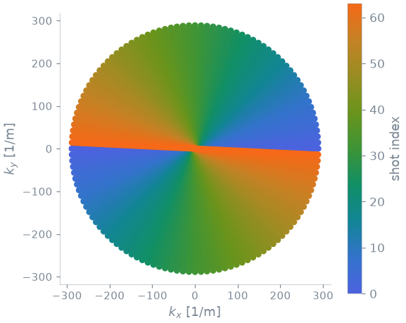
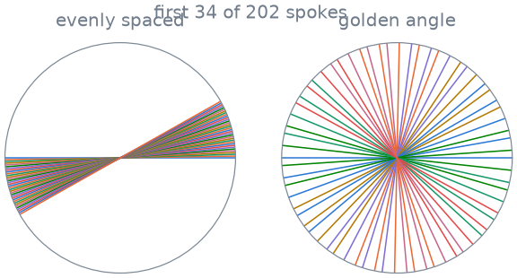
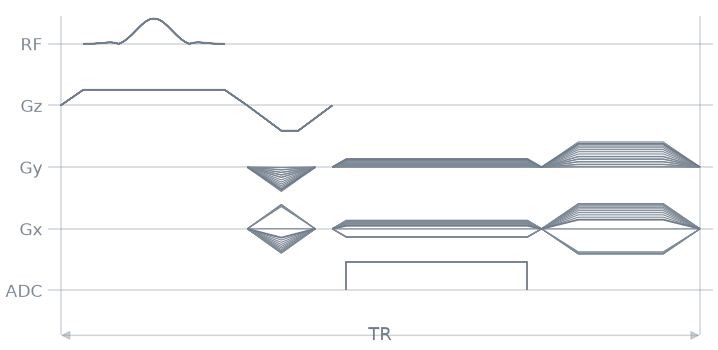
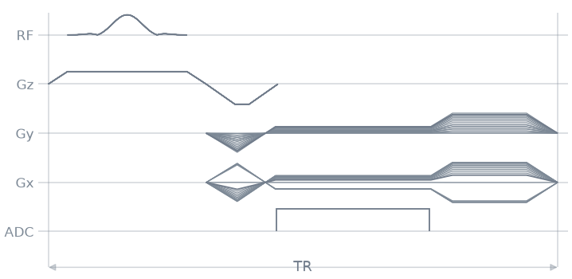

Note
Go to the end to download the full example code.
5. Radial sampling and gradient surgery#
So far each repetition of your gradient echo acquired a horizontal line of k-space, moved up or down by the phase encoding. A radial acquisition acquires spokes instead: lines through the centre of k-space, each rotated by its own angle. Every spoke samples the centre, which makes radial imaging robust to motion, and the spokes can be ordered so that any subset of them covers k-space evenly.
In this lesson you turn the Cartesian readout into a radial one, work out how many spokes you need, and order them by the golden angle. Then you make the repetition shorter with gradient surgery: you merge gradients that follow each other into a single waveform, so they no longer have to ramp down to zero and up again in between.
Learning objectives
Rotate the readout and its prewinder with
rotate().Relate the number of spokes to the matrix, and order the spokes by the golden angle.
Merge the prewinder into the readout, and the readout into the spoiler, with
make_extended_trapezoid_area(), and centre the ADC on the plateau.
Previous: 4. Labels and metadata. Next: 6. Radial MPRAGE, where the radial gradient echo becomes the readout of an MPRAGE.
Events#
The scanner, the slice and the spoiler of the previous lessons. The readout is shorter, at a 10 µs dwell, so the TR shrinks to a few milliseconds.
import numpy as np
import pypulseqpp as pp
system = pp.Opts(
max_grad=32.0,
grad_unit="mT/m",
max_slew=130.0,
slew_unit="T/m/s",
rf_dead_time=100e-6,
rf_ringdown_time=20e-6,
adc_dead_time=10e-6,
)
FOV = 220e-3
MATRIX = 128
delta_k = 1 / FOV
rf, gz, gz_reph = pp.make_sinc_pulse(
flip_angle=np.deg2rad(8.0),
duration=1e-3,
slice_thickness=5e-3,
apodization=0.5,
time_bw_product=4.0,
delay=system.rf_dead_time,
system=system,
use="excitation",
return_gz=True,
)
dwell, readout_time = pp.calc_adc_timing(
MATRIX,
10e-6,
grad_raster_time=system.grad_raster_time,
adc_raster_time=system.adc_raster_time,
)
gx = pp.make_trapezoid(
"x", flat_area=MATRIX * delta_k, flat_time=readout_time, system=system
)
adc = pp.make_adc(MATRIX, dwell=dwell, delay=gx.rise_time, system=system)
gx_pre = pp.make_trapezoid("x", area=-gx.area / 2, system=system)
gx_spoil = pp.make_trapezoid("x", area=2 * MATRIX * delta_k, system=system)
The prewinder and the spoiler have no duration this time: the factory makes each one as short as the scanner allows.
Radial spokes#
A spoke is the Cartesian line with no phase encoding, rotated about z by its
angle \(\varphi\). rotate() does the rotation: it
takes a gradient on x and returns its projections on x and y, which you add
to the block together. Rotate everything that moves along the line, the
prewinder, the readout and the spoiler, by the same angle.
The figure shows 64 spokes spread evenly over half a turn: each spoke covers both halves of its line, so half a turn covers the whole plane.
def radial(angles):
"""One repetition per spoke angle, in radians."""
seq = pp.Sequence(system)
for angle in angles:
seq.add_block(rf, gz)
seq.add_block(*pp.rotate(gx_pre, angle=angle, axis="z"), gz_reph)
seq.add_block(*pp.rotate(gx, angle=angle, axis="z"), adc)
seq.add_block(*pp.rotate(gx_spoil, angle=angle, axis="z"))
return seq
seq = radial(np.arange(64) * np.pi / 64)
ok, errors = seq.check_timing()
print(f"timing ok: {ok}, TR {1e3 * seq.duration()[0] / 64:.2f} ms")
pp.plot.plot_kspace(seq, plane="xy", color_by="shot", show_trajectory=False)

timing ok: True, TR 4.52 ms
Number of spokes#
Along a spoke, the samples are \(\Delta k = 1/\mathrm{FOV}\) apart, as on a Cartesian line. Between two neighbouring spokes the distance grows from zero at the centre to an arc of \(\pi k_\mathrm{max} / P\) at the edge, for \(P\) spokes over half a turn. For that arc to be no larger than \(\Delta k\), you need
spokes: 202 for a matrix of 128, more than the 128 lines of the Cartesian scan. Fewer spokes undersample the edge of k-space but never the centre, which is why an undersampled radial image shows streaks rather than the fold-over of an undersampled Cartesian one.
spokes for a 128 matrix: 202
Golden angle#
With even spacing, you have to acquire all \(P\) spokes before the coverage is even: stop halfway and half of the plane is missing. Advance each spoke by the golden angle instead, \(\pi(3 - \sqrt{5})/2 \approx 111.25^\circ\), and every run of consecutive spokes covers the plane nearly evenly. You can stop the acquisition anywhere, or cut it into frames afterwards.

Stopping after the first sixth of the spokes leaves one sixth of the plane covered with even spacing, and the whole plane, less densely, with the golden angle.
Gradient surgery#
In the diagram of one repetition, the prewinder ramps down to zero, and the readout immediately ramps up again from zero. The readout then ramps down, and the spoiler ramps up. Each of those ramps costs time and adds nothing.
seq = radial(golden)
seq.paper_plot(tr=1)

You can merge them. Instead of a prewinder that starts and ends at zero, you
want a gradient that starts at zero, has the prewinder’s area, and ends at
the readout amplitude, so that the readout plateau follows without a ramp.
make_extended_trapezoid_area() designs exactly that: the
shortest waveform between two amplitudes with a given area. It returns the
gradient and the times and amplitudes of its corners.
The ADC needs its dead time after the last sample, and the block must not end before it, so the plateau is a little longer than the ADC: by twice the dead time, on the gradient raster, with the ADC in its middle. The prewinder’s area is minus half the plateau’s, so the readout crosses the centre of k-space in the middle of the plateau, and of the ADC.
raster = system.grad_raster_time
plateau = readout_time + raster * np.ceil(2 * system.adc_dead_time / raster)
G = gx.amplitude
_, times, amplitudes = pp.make_extended_trapezoid_area(
channel="x", grad_start=0.0, grad_end=G, area=-G * plateau / 2, system=system
)
Add the plateau to the corners, and you have the prewinder and the readout
as one gradient, make_extended_trapezoid(). The ADC starts
at the last corner of the prewinder, where the plateau begins, plus half of
the spare time.
plateau_start = times[-1]
g_read = pp.make_extended_trapezoid(
"x",
times=np.append(times, plateau_start + plateau),
amplitudes=np.append(amplitudes, G),
system=system,
)
adc_read = pp.make_adc(
MATRIX,
dwell=dwell,
delay=plateau_start + (plateau - readout_time) / 2,
system=system,
)
The same at the other end: the spoiler starts at the readout amplitude, so the readout’s ramp-down becomes part of it.
g_spoil, _, _ = pp.make_extended_trapezoid_area(
channel="x", grad_start=G, grad_end=0.0, area=gx_spoil.area, system=system
)
The repetition is now three blocks: the excitation, the merged prewinder and
readout with the ADC (and the slice rephaser beside them), and the spoiler.
The gradient on x and y does not return to zero between the last two
blocks; that is allowed, as long as both blocks agree on the amplitude at
the boundary, which they do because both were designed with G.
def radial_surgery(angles):
"""One repetition per spoke, with the merged gradients."""
seq = pp.Sequence(system)
for angle in angles:
seq.add_block(rf, gz)
seq.add_block(*pp.rotate(g_read, angle=angle, axis="z"), adc_read, gz_reph)
seq.add_block(*pp.rotate(g_spoil, angle=angle, axis="z"))
return seq
merged = radial_surgery(golden)
ok, errors = merged.check_timing()
before, after = seq.duration()[0] / SPOKES, merged.duration()[0] / SPOKES
print(f"timing ok: {ok}")
print(f"TR {1e3 * before:.2f} ms before surgery, {1e3 * after:.2f} ms after")
merged.paper_plot(tr=1)

timing ok: True
TR 4.52 ms before surgery, 4.26 ms after
The echo must remain at the centre of the readout: the sample closest to the centre of k-space is one of the two middle samples, 63 or 64.
k_adc = merged.calculate_kspace()[0]
radius = np.hypot(k_adc[0, :MATRIX], k_adc[1, :MATRIX])
print(f"closest samples to the centre: {sorted(np.argsort(radius)[:2].tolist())}")
closest samples to the centre: [63, 64]
The scan is 202 repetitions, so every fraction of a millisecond you remove from the TR is saved 202 times, and in a 3D radial scan tens of thousands of times. A shorter TR also means a shorter echo train in the next lesson.
Specification#
What this lesson built, stated the way you would ask an agent for it:
Turn the gradient echo into a 2D radial one: no phase encoding, the
prewinder, readout and x spoiler rotated about z by each spoke's angle
with pp.rotate, 202 spokes for a 128 matrix ordered by the golden angle
pi(3 - sqrt(5))/2, 10 us dwell. Then merge the prewinder into the
readout (make_extended_trapezoid_area from 0 to the readout amplitude,
area minus half the plateau) and the readout ramp-down into the spoiler,
start the ADC at the plateau, check the timing and report the TR saved.
Total running time of the script: (0 minutes 0.602 seconds)